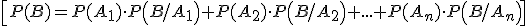
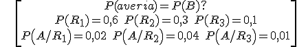
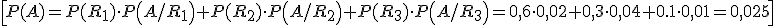

Teorema de la probabilidad total
Sean A1, A2,…,An sucesos. Se dice que forman sistema completo de sucesos si:
· A1UA2U…UAn = E
· Son independientes dos a dos (Ai∩Aj = ф, i,j = 1, 2,…,n)
Teorema de la probabilidad total: Sea A1, A2,…,An un sistema completo de sucesos con P(Ai) ≠ 0, i = 1, 2,…,n. Sea B otro suceso del que sabemos que P(B/Ai), i = 1, 2,…,n. Entonces:

Ejemplo. Una compañía de transportes tiene tres rutas. El 60% de sus autobuses cubre la primera ruta, el 30% la segunda y 10% la tercera. Se sabe que la probabilidad de avería en cada ruta es del 2%, 4% y 1%, respectivamente. Averigua la probabilidad de avería de un autobús.

\[\begin{align} & P(averia)=P(B)? \\ & P({{R}_{1}})=0,6\quad P({{R}_{2}})=0,3\quad P({{R}_{3}})=0,1 \\ & P\left( A/{{R}_{1}} \right)=0,02\quad P\left( A/{{R}_{2}} \right)=0,04\quad P\left( A/{{R}_{3}} \right)=0,01 \\ \end{align}\]

\[P(A)=P({{R}_{1}})\cdot P\left( A/{{R}_{1}} \right)+P({{R}_{2}})\cdot P\left( A/{{R}_{2}} \right)+P({{R}_{3}})\cdot P\left( A/{{R}_{3}} \right)=0,6\cdot 0,02+0,3\cdot 0,04+0.1\cdot 0,01=0,025\]
Ejercicio. Una empresa produce dos tipos de latas: A y B. El 20% de las latas son del tipo A y el 80% son del tipo B. La probabilidad de que una lata del tipo A sea defectuosa es 0,02 y la probabilidad de que lo sea una del tipo B es 0,1. Si elegimos aleatoriamente una lata, ¿cuál es la probabilidad de que sea defectuosa?
Solución: 0,084
Obra publicada con Licencia Creative Commons Reconocimiento No comercial Compartir igual 3.0